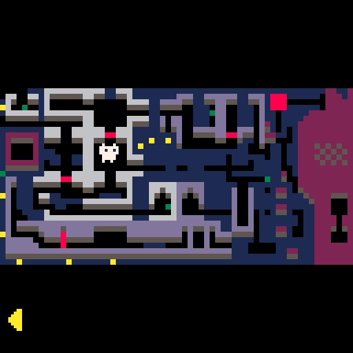

５マスワープ
任意の方向へカーソルを移動できる、基本のワープです。
最初に使った場所を記録しています。
ネタバレを含みます
Steam版『PW7A』では、クリア後に「探索の記録」画面が表示されるようになりました。
プレイヤーの気づきによって任意のタイミングで入手する６種類の力について、力を使用した順番、マップ上のどの位置で初めて力を使用したかを記録しています。

任意の方向へカーソルを移動できる、基本のワープです。
最初に使った場所を記録しています。
カーソルを特定の形にすることで発動する、直線方向へ少し遠くまで移動できるワープです。
最初に使った場所を記録しています。
チェックポイントから発動する、エリアごと移動できるワープです。
最初に使った場所を記録しています。
「おおきなかべ」を超えるための唯一の力です。
最初に使った場所を記録しています。
「きいろいほし」に最初に乗った場所を記録しています。
壊れてしまったロボットへ、最初に話しかけた場所を記録しています。